“Live Reports” is the name given to a group of windows available in Skyline which present information in rows and columns. There is a great deal of customizability in terms of which columns are displayed and how the rows are filtered.
This tutorial will give an overview of several of these windows.
To start this tutorial, download the following ZIP file:
https://skyline.ms/tutorials/LiveReports.zip
Extract the files in it to a folder on your computer, like:
C:\Users\brendanx\Documents
This will create a new folder:
C:\Users\brendanx\Documents\LiveReports
To begin processing the data collected for the Differentiation phase of this method refinement study:
The first thing to do in this document is to enable audit logging. The Audit Log in Skyline keeps track of all of the changes that have been made to the document. When you create a new document in Skyline, the audit log is usually enabled, but in this much older document, the Audit Log has not been enabled.
This brings up the Audit Log form
The Audit Log grid becomes populated with a set of entries which represent the difference between the current document and Skyline’s default blank document
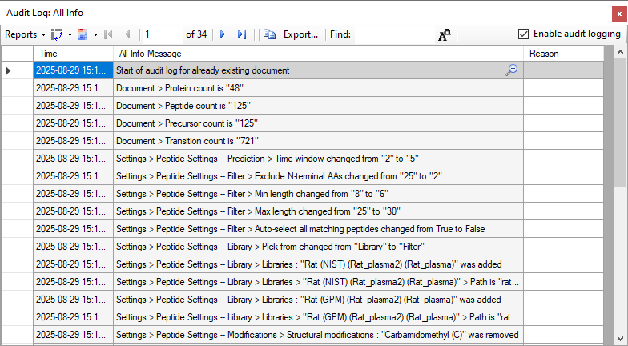
At the end of this tutorial we will return to the Audit Log and inspect its contents
By inspecting the indicators at the bottom right corner of the Skyline window, you will see that the file you opened contains 48 proteins, 125 peptides and 722 transitions.
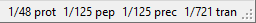
This shows the list of reports that are available to be shown in the Document Grid.
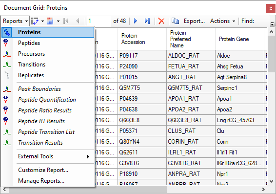
The first five items in the list, Proteins, Peptides, Precursors, Transitions, and Replicates are the “built-in” reports which cannot be modified. Each of these reports show essential information from basic units in the Skyline document. The set of columns that these reports have may change based on the state of the document. In particular, if there are any user-defined annotations, those annotations will be added to the appropriate built-in report.
Below the built-in report are the user-defined reports which can be modified. Skyline ships with a small set of user-defined reports that are designed to be helpful. In addition, it is expected that Skyline users will define their own reports and share them with colleagues.
This displays the built-in “Proteins” report, which shows the list of proteins in the document, in the same order that they appear in the Targets tree.
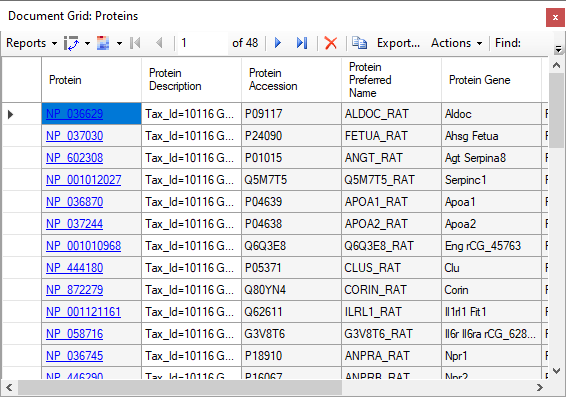
The first column in the report is displayed as a hyperlink, and clicking on text in those cells will navigate to the particular protein in Skyline.
This causes the fourth item in the Targets tree to be selected:
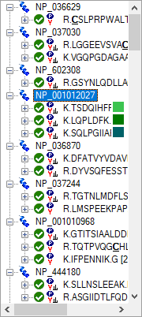
The Status Bar at the bottom of the Skyline window also indicates that the fourth protein in the document is selected.
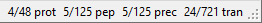
The record navigator at the top of the Document Grid also indicates that the focus is in the fourth row.
The Document Grid can be used to inspect many types of data.
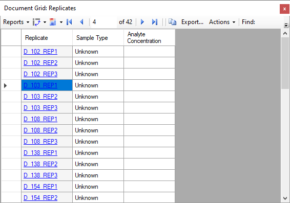
This document contains 42 Replicates. The names of the Replicates are all in three parts. The first letter of the replicate name is a “D” or “H” indicating whether the sample came from a diseased or a healthy rat. That is followed by an underscore, and then three digits which are the subject identifier of the rat. That is followed by “_REP” and then one more digit which identifies which technical replicate it is.
Before using features such as “Group Comparisons”, it is necessary to tell Skyline more about these replicates. The way to do that is by defining some “Replicate Annotations”.
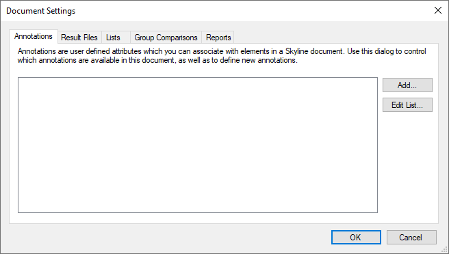
This brings up the “Define Annotation” dialog.
Annotations in Skyline must be given a unique name. There are three fundamental value types for annotations: text, numeric, and true/false. In addition, an annotation can be a “value list”, which is treated as a text annotation whose value is restricted to those in a specified list.
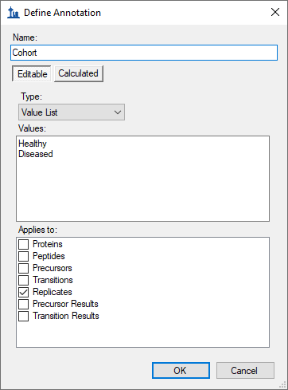
The new annotation now shows up in the Document Settings form
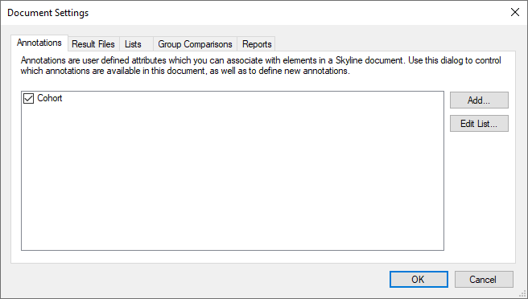
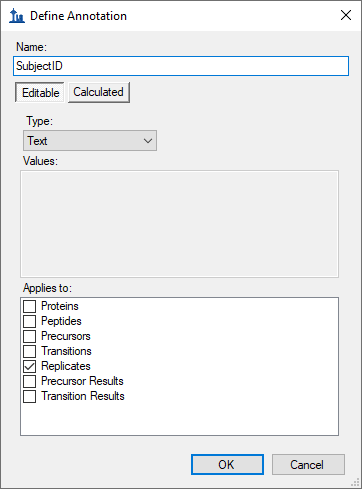
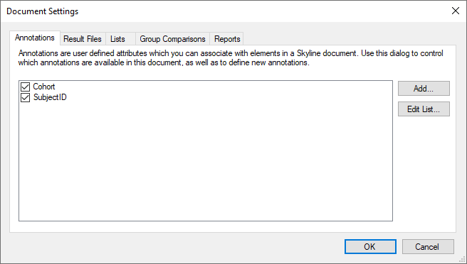
Now, two annotations have been defined and the checked checkbox next to each of them means that they are available in the current document.
The Document Grid which is displaying the “Replicates” report will show the new “Cohort” and “SubjectID” annotations which have been added to the document. If you click in a cell in the “Cohort” column you will see that it is a dropdown allowing you to choose the one of the two allowable values “Healthy” or “Diseased” (or blank).
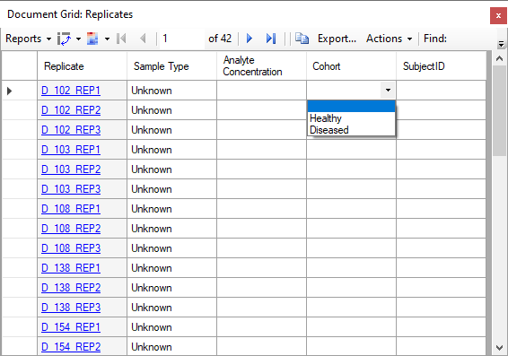
It certainly would be possible to fill in the values in the “Cohort” and “SubjectID” columns by either typing into those cells, or pasting a column of data into them.
In this case, because the values of the annotations are so closely tied to the names of the result files, there is another feature “Result File Rules” which can be used to set the values.
This brings up the Rule Set Editor which allows you to specify ways of populating values in the Skyline document from values from the Result Files.
This brings up the Rule Editor
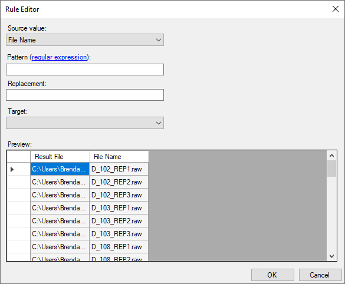

The Preview grid will show the effect that this rule will have. The File Name values in the first 21 rows all do contain the letter D so that the Match checkbox is checked and the word Diseased is filled in for the Cohort
If you move the scrollbar thumb down halfway you will see that the file names which start with “H” are not being matched.
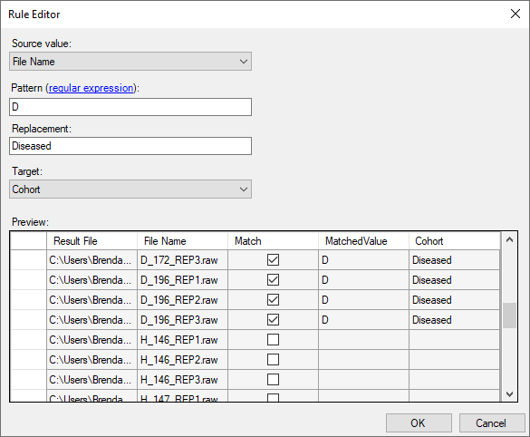
This brings you back to the Rule Set Editor where it is showing the results of that first rule
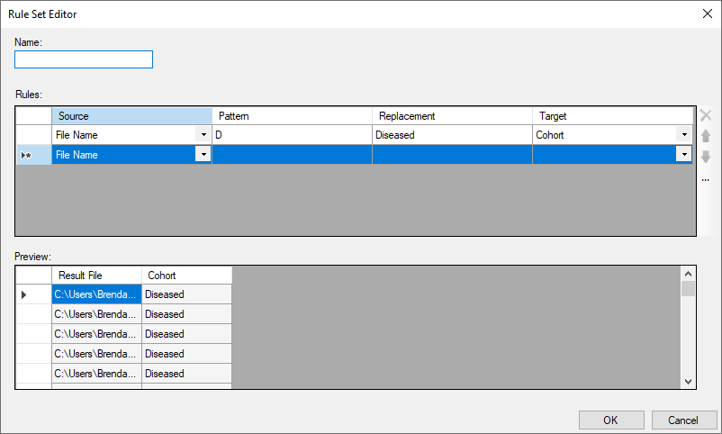
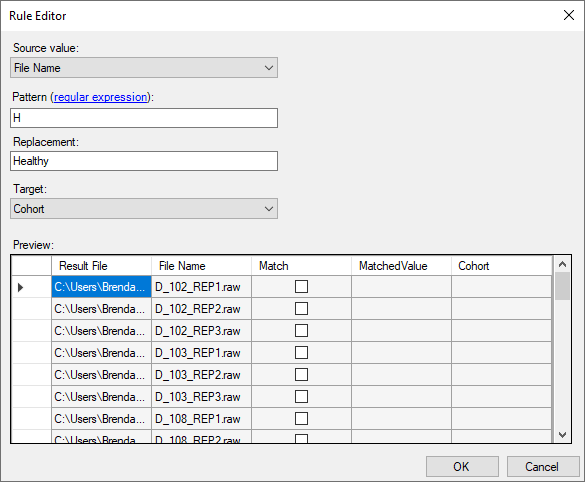
This brings you back to the Rule Set Editor
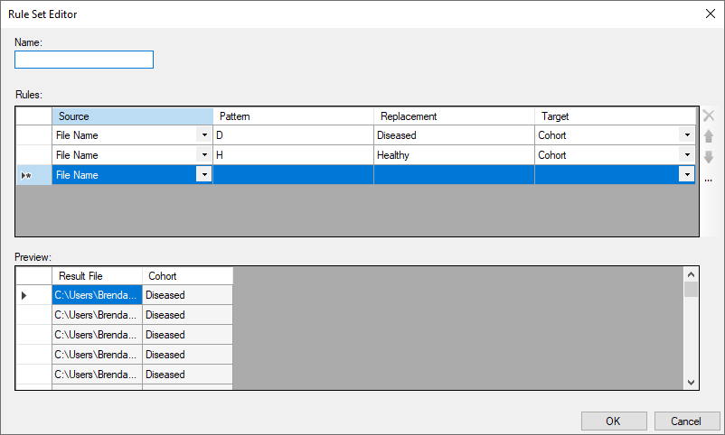
The purpose of the final rule that we create is to set the SubjectID values to D102, H162, etc. by combining the first letter of the file name with the 3 digits that follow the first underscore.
To accomplish this, the pattern that we are going to use is (.)_(...) The parentheses denote regular expression groups, which are parts of the matched expression which can be referred back to in the Replacement text with “$1” and “$2”. The period character (dot) will match any character, and the underscore character will only match an underscore
It should now look like this:
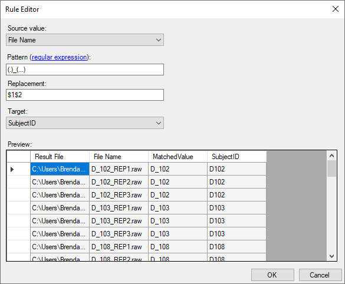
This returns you to the Rule Set Editor which should now look like this:

This returns you to the Document Settings form where the “Cohort and SubjectID” rule has been added and has a checkmark next to it.
The Cohort and SubjectID values in the Replicates report will be filled in from the file names.
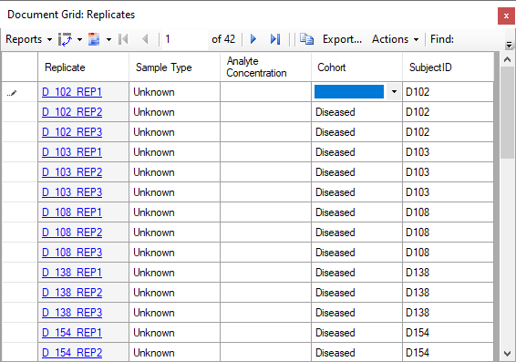
This brings up the List Designer
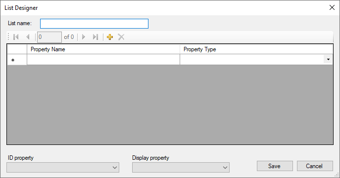
The List Designer should now look like this:
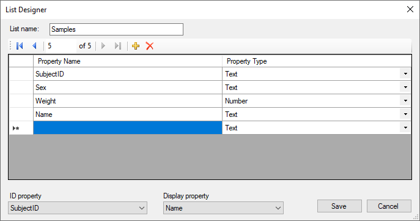
This brings you back to the main Skyline window.
This brings up a grid which shows the list that we just defined. There are no rows in the list, but it has the four columns that we defined: SubjectID, Sex, Weight and Name
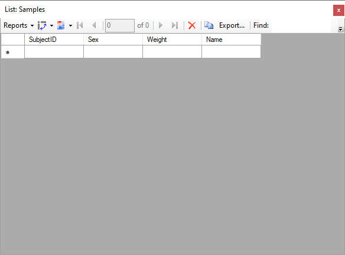
It would be possible to fill in values by typing into the grid, but we have already prepared a text file with data that can be used.
You can navigate to that text file using the “File > Open Containing Folder” menu item in Skyline.
This will bring up the Windows Explorer on the folder containing the Skyline document. Find the file there called “SampleInfo.txt”. Double-click on that file in Windows Explorer.
This will most likely bring up Notepad, a simple text editor. The first line of the text editor has the column names “SubjectID”, “Sex”, “Weight” and “Name”.
Go back to Skyline and make it so that the first column of the first row in the List: Samples is the current cell.
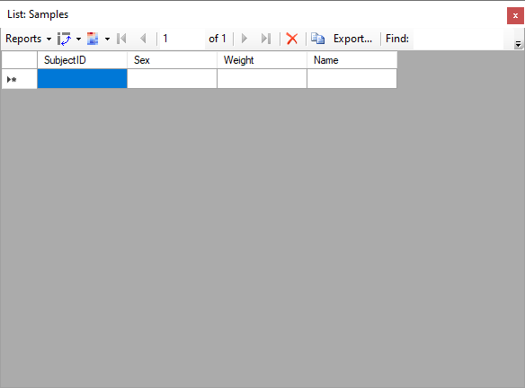
This should add 14 rows to the grid.
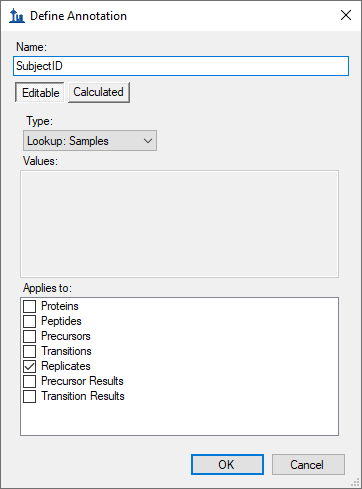
Notice that in the Document Grid, the values displayed in the “SubjectID” column are now the names of rats from the Samples list. For each row where the SubjectID annotation has matched something in the ID Property column from the list, Skyline displays the value from the Display Property of the list.
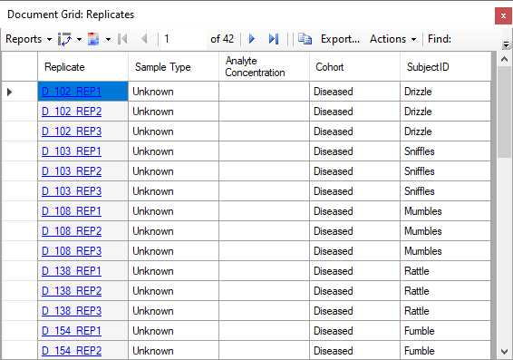
This brings up the Customize Report dialog where the columns from the Peptides report have been selected.
This causes all the column names between “First Position” and “Peptide Note” to become selected.
This removes the selected columns from the column list, so that only “Peptide”, “Protein”, “Peptide Modified Sequence” and “Standard Type” remain.
This adds the “Total Area” column to the list of chosen columns.
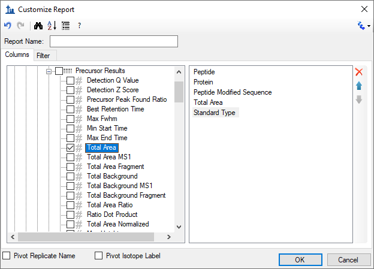
When a column is added to a report, it is usually inserted ahead of whatever column may be selected in the column list. If no column is selected in the column list then newly added columns are added to the end.
We would prefer to have the “Total Area” column appear after “Standard Type”
We would like to add another column to the report, and we would like that column to appear before Total Area
The Customize Report dialog should now look like this:
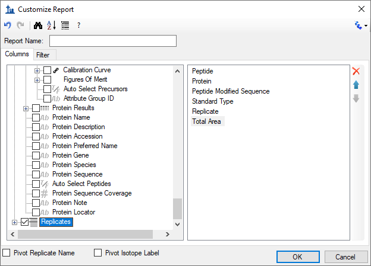
The Document Grid should now look like this:
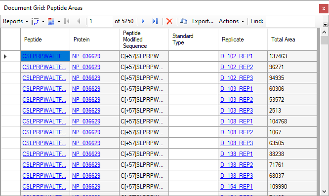
This report has 42 rows for each peptide.
This brings up the Customize Report dialog again
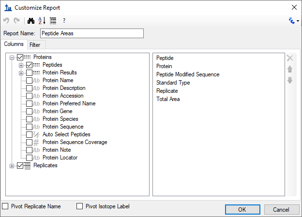
The Document Grid is now displaying one row per peptide.
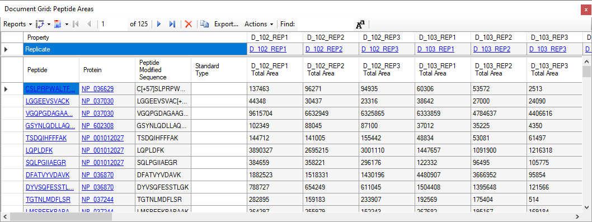
The “Replicate” and “Total Area” columns are repeated horizontally, showing values from the different replicates.
This shows the peak areas for the currently selected peptide across all the replicates. The order of the replicates in the Peak Areas Replicate Comparison graph is the same as the horizontal order of the replicates in the Document Grid. You can visually verify that the Total Area values displayed in the Document Grid are the same as the values displayed in the Peak Areas Replicate Comparison graph.
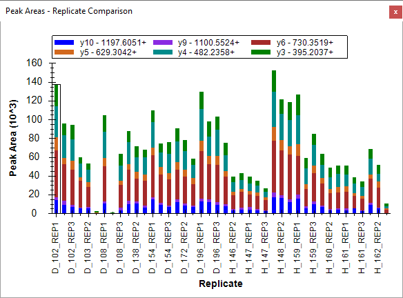
The Normalized Area column is now selected in the column tree on the left

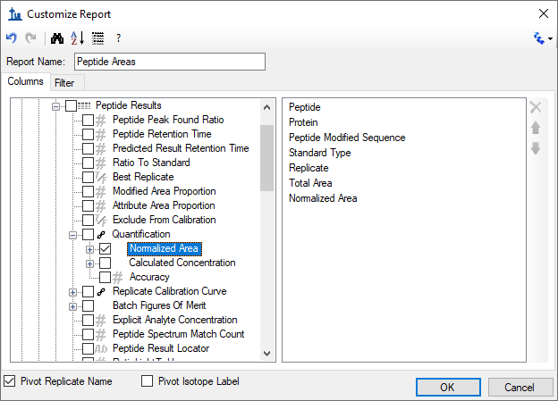
The Document Grid now shows the values from the “Normalized Area” column next to each of the “Total Area” values.
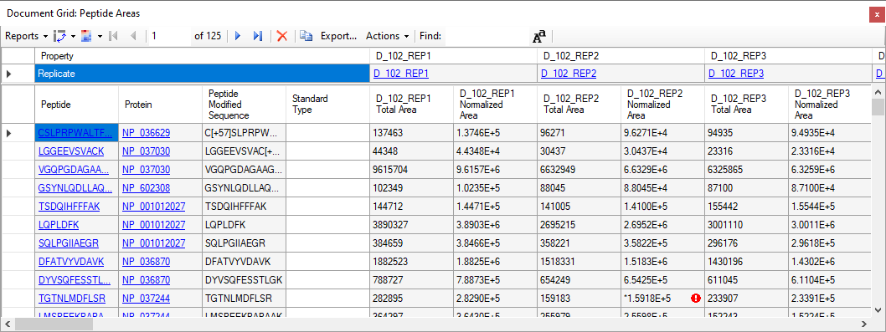
The values shown in the “Total Area” columns are the same as the values in the “Normalized Area” columns although they are formatted differently.
It may be easier to see that the values if you change the format of one of the columns to be the same.
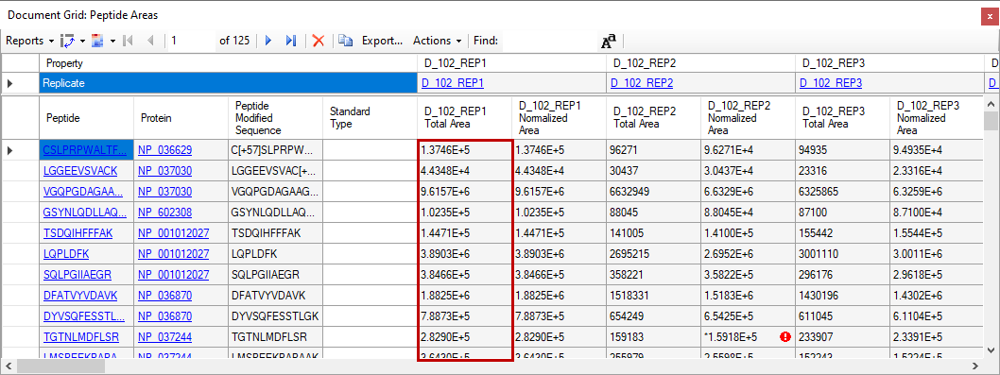
It is now much easier to see that the values in the “Total Area” and “Normalized Area” columns are the same.
Notice that in the tenth row in the “D_102_REP2 Normalized Area” column there is a red exclamation mark next to the value.
If you hover the mouse over the exclamation mark you will see a tooltip.
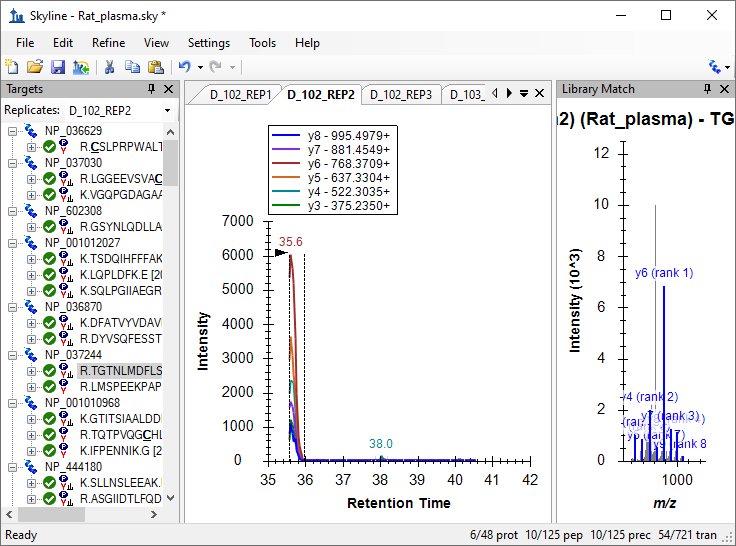
In order to investigate that
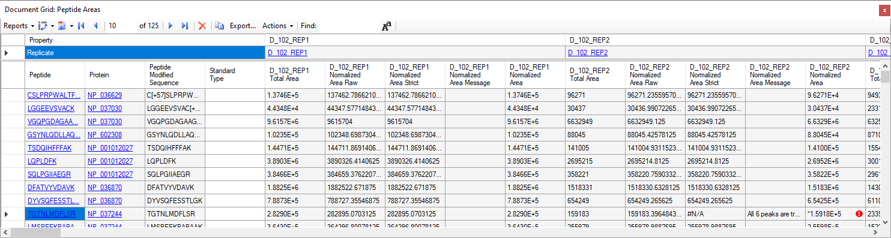
The red exclamation mark is warning that the integration boundaries of the chosen peak coincide with the edit of the time range of the acquired SRM chromatogram. This could be a problem when comparing peak areas between replicates, as replicates with truncated peaks will tend to have lower peak areas than non-truncated peaks.
The Normalized Area in the tree on the left will become selected when the column is double clicked in the list box.
This reveals three additional columns which could be added to the report.
The values in the Normalized Area Raw and Normalized Area Strict are generally the same as each other, except in the place where the Normalized Area value has a red exclamation mark and the Normalized Area Message value is not blank. In that spot, the value of “Normalized Area Strict” is “#N/A”.
This now shows a narrower view of the report with many fewer columns and more rows.
This brings up the Pivot Editor
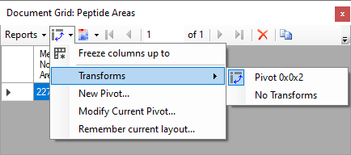
The Document Grid now shows only a single row where the two columns show the average value from the Normalized Area Raw and Normalized Area Strict.
The average value in the Normalized Area Strict cell is a higher number than the value in the Normalized Area Raw cell. This is to be expected because truncated peaks tend to have smaller than expected areas and excluding them from a list would tend to result in a higher mean.
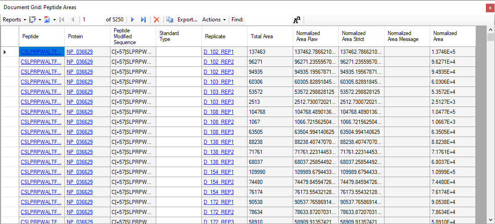
This shows a list of the operations which have been performed on the report.
This restores the Document Grid to the way that it looked before
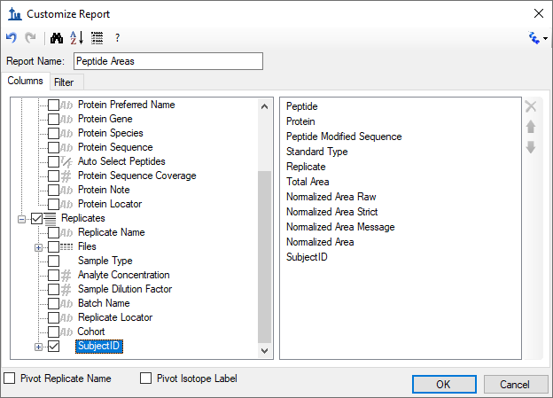
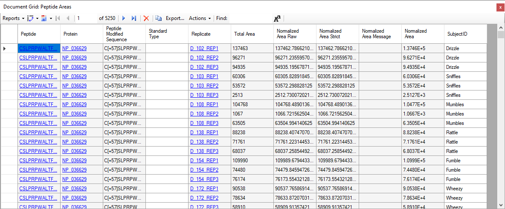
This adds the SubjectID column to the report
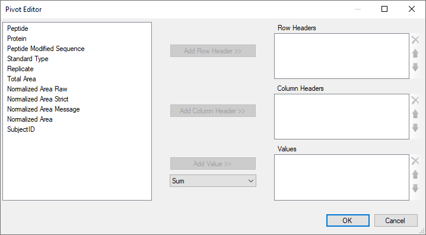
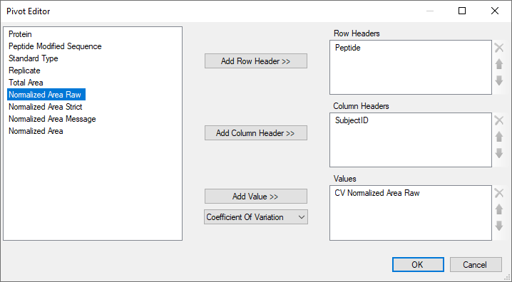
The Pivot Editor should now look like this:
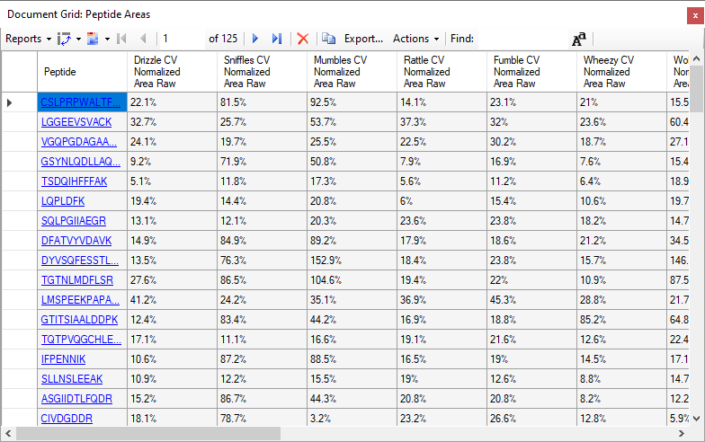
The report now shows the Coefficients of Variations for each peptide between each rat’s technical replicates
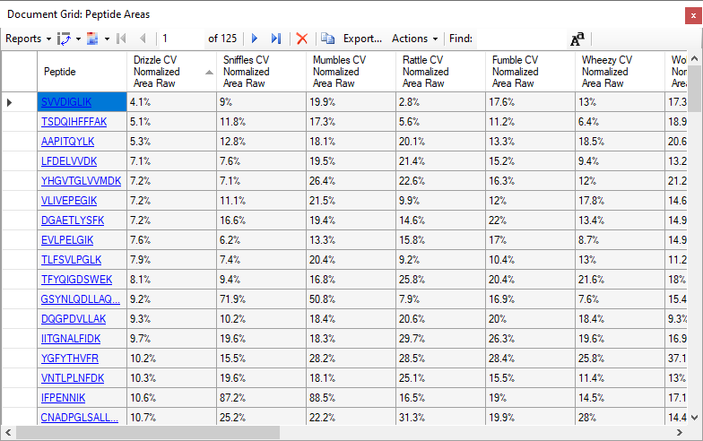
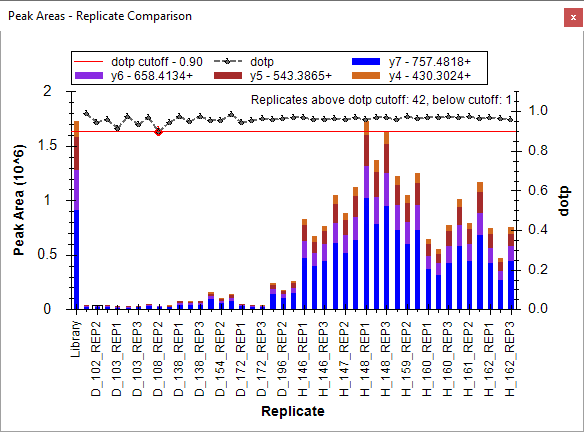
The currently selected peptide now has the lowest CV for the rat named Drizzle of all of the peptides in the document.
Look at the Peak Areas Replicate Comparison window
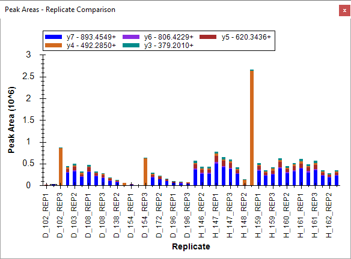
The very large bar at the left edge shows the relative intensities from the spectral library. The three bars immediately to the right of that belong to the rat named “Drizzle”. Their heights are very similar to each other.
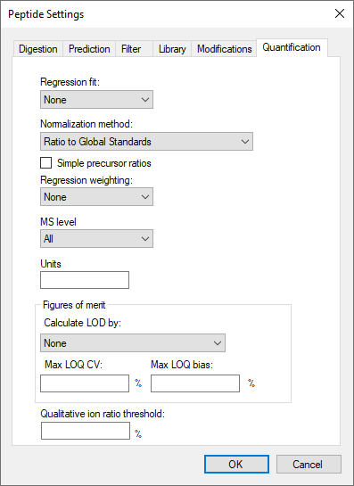
The currently selected peptide has the most variation in peak areas across the replicates associated with the rat named Drizzle. There is a great deal of variation in the heights of the three bars at the left end of the graph.
The “Normalized Area” column shows areas normalized according to the normalization method specified on the Quantification tab at “Settings > Peptide Settings”
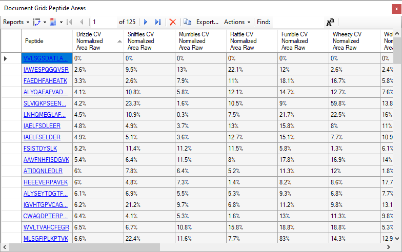
The Normalized Area values are now the Total Area values divided by the area of the Global Standard peptide.
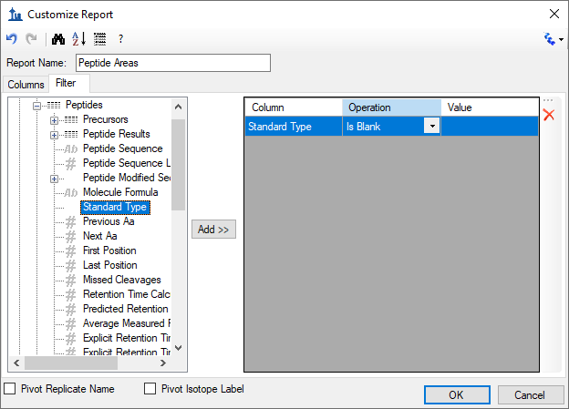
The very first row shows “0%” as the CV for each of the samples. This is to be expected because this document has only one Global Standard normalization peptide. The area of that peptide normalized to itself will always be exactly 1, and therefore the CV of that value will always be zero.
The Customize Report dialog should now look like this:
The first row with the global standard peptide VVLSGSDATLAYSAFK has been removed
Name: Peptide Group Comparison
Control group annotation: Cohort
Control group value: Healthy
Value to compare against: Diseased
Identity annotation: SubjectID
Normalization method: Default
This shows the Peptide Group Comparison grid
The bar graph plot shows the fold change values for each of the peptides that is displayed in the grid.
The data is now sorted so that the peptides with the smallest fold change are displayed first and the peptides with the largest fold changes are displayed last.

This peptide clearly has lower abundance in the diseased replicates compared to the healthy replicates.
The grid and the graph are now showing only the rows where the adjusted P-value is less than 0.05.

The group comparison grid can also show the per-replicate abundances which contributed to the fold change calculation
The grid now shows abundances for each peptide and replicate. The values shown in the cells are equal to the Normalized Area Strict values that were seen in the Document Grid, except that the values in the group comparison grid have been divided by the number of transitions in the peptide.
Skyline displays a heat map where the peptides and replicates have been reordered so that the dendrograms above and to the right of the graph can be drawn to indicate which rows and columns are most similar to each other
This shows all the custom reports that Skyline knows about. These reports include the “Peptide Areas” which we created in the Document Grid and the “Replicate Abundances” report from the Group Comparison grid. There are also some small molecule reports which would only show up in the Document Grid if this were a small molecule or mixed mode document instead of a proteomics document.
The Replicate Abundances and Peptide Areas report definitions are now part of this document.
If you were to use the “File > Share” menu item to create a .sky.zip file containing this document and send that document to someone else, when they opened that document the “Peptide Areas” and “Replicate Abundances” report definitions from this document would be added to the list of reports in their Skyline instance.
This shows in detail the operations that have modified this document.
This shows a more concise list of things that have happened to the document with one row per operation.

This dialog allows exporting of reports from the Document Grid. The Peptide Areas that we designed in this tutorial is one of the choices. The “Replicate Abundances” report from the Group Comparison grid is not one of the choices because this dialog only allows exporting of Document Grid reports.